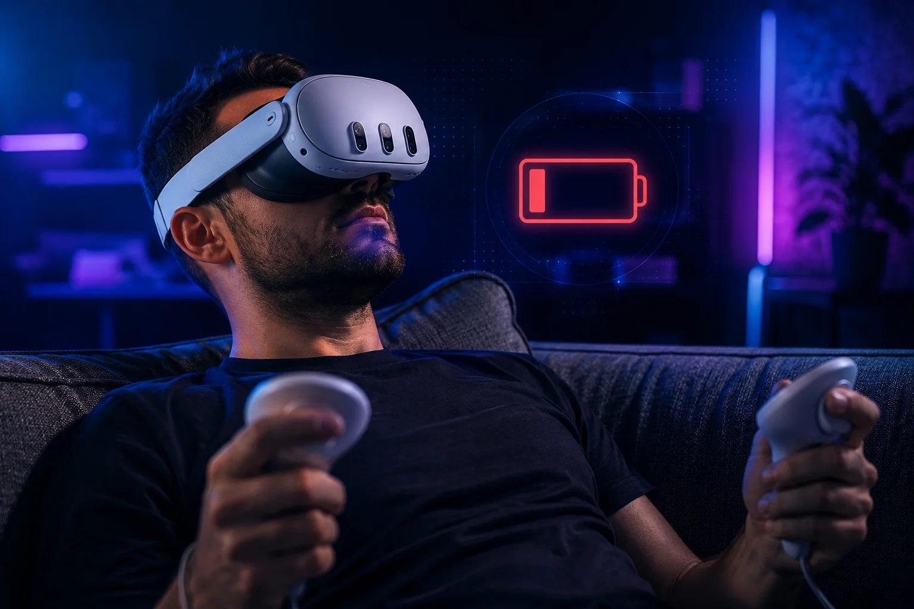

Por qué la batería de las Quest 3 dura tan poco (y cómo alargarla de verdad)

Arranquemos por darte la razón: sí, dura poco. Unas dos horas de juego por carga, algo más si la app es tranquila, y bastante menos si vivís en la realidad mixta a todo color, que exprime las cámaras. Y cuando se muere, viene la sal en la herida: cargarla de cero lleva casi una hora cuarenta y cinco con el cargador que viene en la caja. Dos horas de juego, casi dos de espera.
Ahora, el dato que acomoda todo lo demás: no es una falla, y tu visor no salió malo. Un visor autónomo es una PC gamer entera —procesador, dos pantallas de alta resolución, cámaras, antenas— colgada de tu cara, donde cada gramo cuenta, así que la batería tiene que ser chica a la fuerza. Dos horas, dos y media, es lo normal en toda la categoría a este nivel de potencia. Aceptado eso, la pregunta deja de ser "cómo consigo una pileta más grande" y pasa a ser "cómo la vacío más despacio, o cómo la relleno mientras nado". Son dos juegos distintos, y la mayoría de las guías los mezcla.
Primer juego: los ajustes. Esto te compra minutos, no horas; vale la pena, pero seamos francos con la escala. Los dos que de verdad mueven la aguja son la tasa de refresco y la pantalla. Si en algún momento subiste el refresco a 120 Hz, bajalo a 90 o incluso a 72 para los juegos tranquilos: la pantalla y el procesador son lo que más chupa, y los cuadros extra cuestan energía. El brillo, ponelo cómodo y no al mango. Activá el modo Ahorro de batería en Configuración, que junta varios de estos recortes en una sola llave. Y si estás jugando algo cien por ciento offline, apagar el Wi-Fi desde los Controles rápidos frena el goteo de fondo de las antenas; obviamente salteá este si jugás multiplayer o transmitís desde la PC (nuestra guía de PCVR sin cable es el caso contrario: ahí el Wi-Fi es la función). Lo que no te vamos a decir es que apagar la vibración te regala una hora más: esas promesas andan dando vueltas y no resisten prueba.
Segundo juego: la energía externa. Este es el que arregla el problema en serio, porque no estira la batería: la rellena mientras jugás. La solución más prolija es un strap con batería: una correa con la pila integrada atrás que, en general, te duplica el tiempo de juego hasta las cuatro horas y —yapa que nadie espera— mejora la comodidad, porque el peso de atrás equilibra un visor que se va todo para adelante. Es la mejor compra de calidad de vida para unas Quest 3. La versión criolla de la misma idea: un power bank en el bolsillo y un cable USB-C largo hasta el visor. Menos elegante, con el cable por la espalda, pero funciona y capaz ya tenés uno en un cajón. Para jugar sentado, sinceramente no hace falta más.
Y queda el partido largo: cuidar la salud de la batería para que esas dos horas no se conviertan, calladitas, en hora y media dentro de un año. Las baterías de litio odian los extremos. Tratá de vivir entre el 20 y el 80 por ciento en vez de fundirla a cero y cargarla al tope cada vez; no la dejes enchufada días enteros; y si vas a guardar el visor una temporada, dejalo con media carga. Lejos del calor, siempre: nada de cargarlo abajo de una manta, nada de dejarlo en el auto al sol, y nunca donde la luz le pegue a las lentes, que es un desastre aparte y lo contamos en la guía de limpieza.
El resumen honesto: con los ajustes rascás unos minutos más; con un strap con batería o un power bank, el problema prácticamente desaparece. Y si dos horas sin cable nunca te alcanzan y ningún accesorio te convence, el problema ya no es la batería sino el visor elegido — para eso está el quiz.
Respondé 7 preguntas rápidas y recibí una recomendación personalizada en 60 segundos.
Hacer el test de VR Finder →Los precios y las especificaciones pueden cambiar. Como Afiliado de Amazon, vr.ar gana con las compras que cumplen los requisitos. Mirá nuestra Política de privacidad.